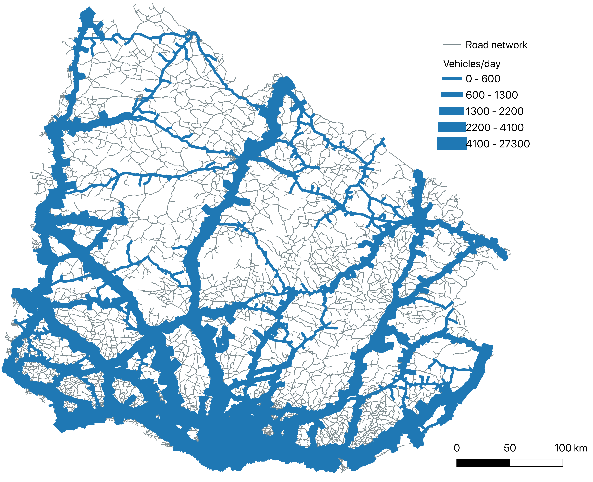
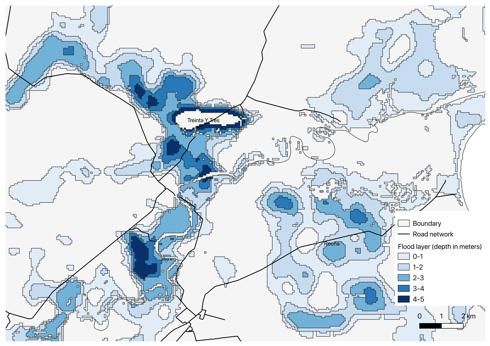
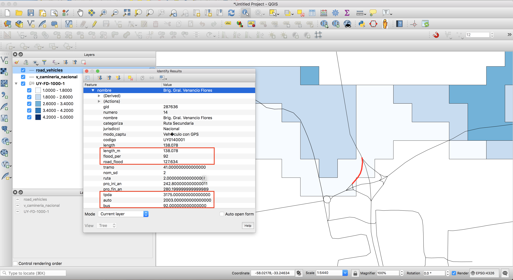

This mini-lecture introduces some basic understanding of how hazard information is spatially combined with infrastructure network information to develop criticality outcomes. Through an example of river flooding over a road network in Uruguay, we look at a very simple case of generating useful exposure and vulnerability outcomes of hazard network intersections.
In mini-lecture 8.3, we introduced the concept of exceedance probability maps and how they are used in estimating infrastructure network risks. Before that, in mini-lecture 8.2, we covered the concepts of exposures and vulnerabilities in the context of infrastructure risk analysis. Here we show how an exceedance probability hazard layer is overlaid and combined with a road network to produce exposure and vulnerability outcomes useful for decision-making.
We present a simplified exposure and vulnerability assessment for the national scale road network in Uruguay, for which we know the average daily traffic count of vehicles along different road sections (see Figure 8.4.1).

Figure 8.4.1: Spatial representation of the national road network in Uruguay showing the average daily vehicle counts along different roads
We infer the potential exposure and vulnerability of infrastructure networks by spatially intersecting them with hazard maps. As shown in Figure 8.4.2, a river flood map (shown in mini-lecture 8.3 as Figure 8.3.1) with a 1 in 1000 exceedance probability (Wing et al. 2020) is overlaid with a road network in Uruguay, from which the potential locations of roads exposed to high flood depths (> 1metre) can be identified. The type of outcomes of such analyses include estimating the exact geometry, flooded lengths and flood depths along sections of roads. The intersection analysis can be done with a software package such as QGIS (QGIS Development Team 2021) or using spatial functions in Python programming language, which are covered in the Hands-on sessions 5 and 6.

Figure 8.4.2: Overlaying a 1 in 1000 flood hazard map with a road network and identifying locations of flood exposures
As a single road could be exposed to flooding over several sections and many flood depths, we can estimate the total length of flooding and minimum and maximum flood depths for each road.
Also, since we know the traffic counts along the road, we can get an estimate of the potential traffic that could be disrupted due to flooding, which is a measure of the level of vulnerability associated with the road.
All these insights are shown in the Figure 8.4.3 for a particular road overlaid with the 1 in 1000-year return period flood map. See Figure 8.4.3 caption for the exposure and vulnerability outcomes highlighted for this road network section.

Figure 8.4.3: Result of overlaying a road with the flood outline. Here we see the length of the road flooded (road_flood), and flood depth (between 1m – 1.8m), and the potential traffic disrupted per day on this road (daily total traffic – tpda, numbers of automobiles – auto, numbers of buses – bus) (Figure generated in QGIS software (QGIS Development Team 2021))
A simple way of identifying the most critical roads in the country is to look at the roads with the highest lengths or percentages of flood exposures and the highest impacted traffic flows. Figure 8.4.4 builds on the analysis for the Uruguay road network exposed to a 1 in 1000-year return period river flood map (see Figures 8.4.2-8.4.3). We identify locations where the road network will be exposed to flood depths >1m and look at the disrupted traffic counts in those locations. The network locations (hotspots) found to be most vulnerable are highlighted in the Figure 8.4.4.
The results in Figure 8.4.4 showcase a criticality assessment of the road network due to a flood hazard. Criticality here is defined as a measure of a network asset’s (in this case road link) importance and disruptive impact on the rest of the infrastructure (Pant, Hall, and Blainey 2016). Criticality assessment results in ranking network elements based on their relative impacts on the serviceability of the whole network (Jafino, Kwakkel, and Verbraeck 2020).
Such simplistic analyses can be used as a first-order screen method to identify locations where risks could be analysed in more detail. At the national scale, it is not possible to identify risks to every road, due to limitations of budgets on monitoring and disaster response. By doing such analyses, the critical locations identified at the high-level scale can be subjected to detailed site-specific investigations, building more complex hazard and structural models. This would be a cost-effective way of prioritising resources for risk identification and disaster resilience planning.
Figure 8.4.4: Identification of critical road hotspots in Uruguay in terms of their exposures and potential traffic counts disrupted due to a 1 in 1000-year return period river flood at different locations in the country. The selected locations all have flood depths > 1metre
The approach we have presented in this lecture is a very simplistic way of screening potential vulnerable locations on networks and identifying their impacts. There are further analysis steps that should be included in such analyses to get more realistic risk outcomes. These are covered later across different lectures in this course. We provide an overview here for the reader to understand what to look forward to:
The vulnerability or failure of an asset (road section here) is not a deterministic quantity, but rather a probabilistic estimate derived from fragility curves – these are discussed in mini-lecture 10.2.
The damages associated with hazards are not limited to specific point locations (as shown in Figure 8.4.4), but rather have wider spatially dependent footprints - these are discussed in mini-lectures 10.3 and 10.4.
The vulnerable impacts (traffic counts here) to networks are estimated through more complex network flow models which account for how the disruption will propagate through the rest of the network. This was introduced and discussed in mini-lectures 8.2 and 8.3, and more detailed flow models are discussed for transport (mini-lecture 9.2), water (mini-lecture 9.3) and energy (mini-lecture 9.4) networks.
The analysis done here shows the outcomes for one of many possible hazard maps. If several such hazard maps or actual simulations of hazard event sets were available, then the calculations should be repeated over several hazards and network failure scenarios to get a more complete picture of vulnerabilities and risks. This is discussed across Lecture 11 and Hands-on 6.
In this mini-lecture we demonstrated a very simplistic hazard exposure and vulnerability analysis. We used a river flooding exceedance probability map layer and overlaid it with a national scale road network for Uruguay. We then estimated the flooded lengths and flood depths of all road network sections.
The exposure analysis gave us the locations of all flooded roads, for which we also knew the disrupted traffic counts as the vulnerability metric. Finally, we assembled the results of the analysis by presenting a criticality map of the road network, which showed the locations (hotspots) of the flooded roads and their affected traffic counts.
The analysis presented here could serve as a first-order prioritisation tool at the national-scale for screening potential vulnerable locations that could be investigated in more detail. For countries where disaster risk planning budgets and capacities are limited, such analysis is a useful first step to narrow down options for resource allocations.